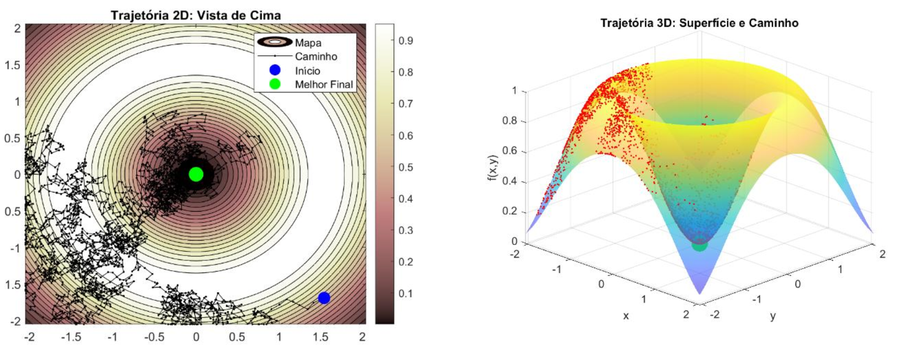

Sobre o Projeto
Projeto académico desenvolvido na unidade curricular de Inteligência Artificial, com foco na implementação e comparação de diferentes algoritmos de otimização aplicados a funções multimodais complexas.

Principais Contributos
- Implementação de vários algoritmos de otimização e meta-heurísticas
- Análise comparativa do desempenho em funções com múltiplos mínimos locais
- Visualização gráfica da convergência e comportamento dos algoritmos
Algoritmos Explorados
- Subida da Colina com Reinicialização Múltipla
- Simulated Annealing
- Algoritmo Genético
- Particle Swarm Optimization (PSO)
Resultados
O estudo permitiu compreender as diferenças entre métodos de pesquisa local e global, destacando a eficácia de técnicas estocásticas na resolução de problemas complexos.
- Comparação do desempenho dos algoritmos em diferentes cenários
- Identificação das vantagens e limitações de cada abordagem
- PSO e Simulated Annealing mostraram melhor capacidade de evitar mínimos locais
Tecnologias Utilizadas
- Plataforma: MATLAB
- Área: Inteligência Artificial e Otimização
- Métodos: Meta-heurísticas e análise gráfica de resultados
Contexto
Projeto desenvolvido em contexto académico, em trabalho de grupo, com foco na compreensão prática de técnicas de otimização utilizadas em Inteligência Artificial.